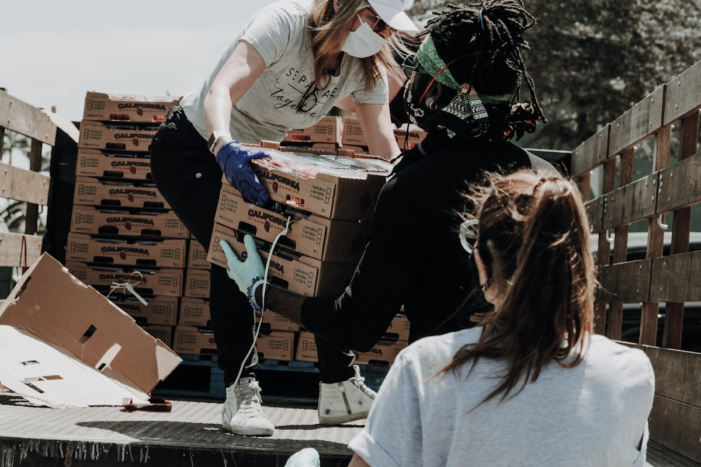

“We did not need a campaign; we needed one flexible grant to put mobile intake days on the calendar.”
Harbor Youth Clinic received an $18,000 health-access grant to schedule weekend intake hours and print multilingual referral cards with two neighborhood partners.
Request$18,000
Mobile intake weekends and referral cards.
FitHealth access
Local need with existing community trust.
Board noteApproved Apr 2026
No private client data is published.
Follow-upMar 2027
One public use note after grant year closes.